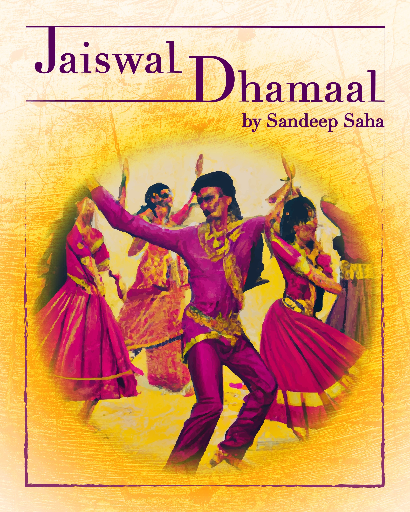

My Writing
My Book
Dive headfirst into the world of the Jaiswals, an eccentric, tight-knit family from the outskirts of Kolkata. This uproarious and heartwarming tale takes you on a rollercoaster ride through their wild adventures, petty squabbles, and unforgettable memories. From their humble beginnings as gold traders and bus operators to their present-day shenanigans, the Jaiswals never fail to entertain and amaze. As you follow the colorful lives of siblings Mimi and Timi, their quirky friends, and a motley crew of cousins, in-laws, and distant relatives, you'll find yourself immersed in a vibrant world filled with laughter, love, and a generous helping of chaos. Whether they're celebrating grand reunions, engaging in hilarious misadventures, or simply trying to navigate the ups and downs of life, the Jaiswals always manage to find the humor and joy in every situation. This hilarious and heartwarming book is a love letter to family and the bond that unites us all. With its unforgettable characters, riotous anecdotes, and a dash of Bollywood flair, "Chaos, Laughter, and Love: A Jaiswal Family Saga" is a must-read for anyone who has ever been a part of a chaotic, loving family or simply wishes to escape into a world filled with laughter and heart.
Subscribe to My Substack
Title-town has not won a title since 2011 and worse yet, has not won a single NFC championship game and never been back to the Super-bowl since. The team has changed, the coach has changed, GB even got some new bars, restaurants that stay open past 8pm but the quarterback Aaron Rodgers has been the one constant.